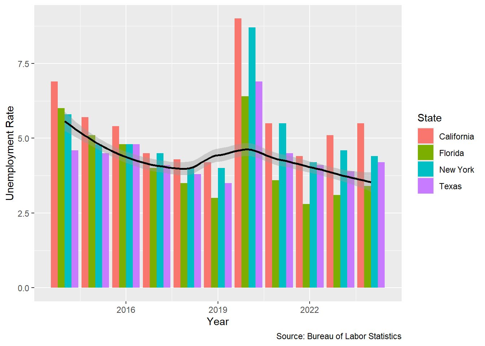

The topic that we chose to talk about for this project how unemployment rates vary from state to state, across the time span of December 2014 to December 2024.
One reason that motivated us to dig into this topic was the noticeable and well known Pre- and Post-Pandemic Comparison. We know the U.S. had a strong job market leading into 2020. In 2020, COVID-19 caused historic unemployment spikes, with rates reaching nearly 15% in April 2020. Examining this full range helps assess how resilient the labor market was before and how well it recovered afterward.
Another reason that motivated us to explore this topic is the relationship between inflation and recovery dynamics. After 2021, the U.S. experienced high inflation and a series of interest rate hikes by the Federal Reserve. Analyzing unemployment trends helps us understand how these macroeconomic factors influence job stability, wage growth, and overall economic resilience.
Statement:
This project analyzes U.S. unemployment trends from December 2014 to December 2024 to understand how major events—like the COVID-19 pandemic, economic recovery, and inflation—impacted the job market. The goal is to assess policy effectiveness, identify structural shifts, and highlight disparities in employment across time and regions to support better future decision-making.
Data Storytelling:
Questions and Objectives:
How have unemployment rates in California, Florida, New York, and Texas changed from 2015 to 2024?
Which state among California, Florida, New York, and Texas had the most consistent unemployment rates over time, and what factors might contribute to that stability?
Which states consistently experience the highest unemployment rates, and how do those rankings shift over time?
Which regions in the U.S. are experiencing the highest and lowest unemployment rates?
Data Transformation and Descriptive Statistics:
Our data frame measures the unemployment rate (u3) across all 50 U.S. states monthly from December 2014 to December 2024.
Since the data frame was originally in a wide format, it was not very useful to visualize with ggplot because it had so many columns, so we pivoted the data-frame to make it longer and more easy to visualize.
State or Year
avg_u3
med_u3
min_u3
max_u3
var_u3
Alabama
4.160331
3.8
2.3
13.8
3.09958
Alaska
5.882645
6
3.8
11.8
2.112446
Arizona
5.04876
4.8
3.3
13.8
2.202853
2014
5.467308
5.5
2.6
12.6
2.437146
2015
5.143269
5.2
2.6
12.2
2.159184
2016
4.801763
4.8
2.7
12.1
1.966466
The table above shows an example of our summary statistics. We had two tables, one measured by state and one measured by year. Puerto Rico has the highest average unemployment rate and the year 2020, as expected, also had the highest average unemployment rate.
Plots
Simple Bar Graph
library(ggplot2)library(readr)
Warning: package 'readr' was built under R version 4.4.2
library(tidyverse)
Warning: package 'tidyverse' was built under R version 4.4.2
Warning: package 'tibble' was built under R version 4.4.2
Warning: package 'tidyr' was built under R version 4.4.2
Warning: package 'purrr' was built under R version 4.4.3
Warning: package 'dplyr' was built under R version 4.4.2
Warning: package 'stringr' was built under R version 4.4.3
Warning: package 'forcats' was built under R version 4.4.2
Warning: package 'lubridate' was built under R version 4.4.3
── Attaching core tidyverse packages ──────────────────────── tidyverse 2.0.0 ──
✔ dplyr 1.1.4 ✔ stringr 1.6.0
✔ forcats 1.0.0 ✔ tibble 3.2.1
✔ lubridate 1.9.5 ✔ tidyr 1.3.1
✔ purrr 1.0.4
── Conflicts ────────────────────────────────────────── tidyverse_conflicts() ──
✖ dplyr::filter() masks stats::filter()
✖ dplyr::lag() masks stats::lag()
ℹ Use the conflicted package (<http://conflicted.r-lib.org/>) to force all conflicts to become errors
Warning: package 'reticulate' was built under R version 4.4.3
library(gganimate)
Warning: package 'gganimate' was built under R version 4.4.3
library(ggmap)
Warning: package 'ggmap' was built under R version 4.4.3
ℹ Google's Terms of Service: <https://mapsplatform.google.com>
Stadia Maps' Terms of Service: <https://stadiamaps.com/terms-of-service>
OpenStreetMap's Tile Usage Policy: <https://operations.osmfoundation.org/policies/tiles>
ℹ Please cite ggmap if you use it! Use `citation("ggmap")` for details.
library(sf)
Warning: package 'sf' was built under R version 4.4.3
Linking to GEOS 3.13.0, GDAL 3.10.1, PROJ 9.5.1; sf_use_s2() is TRUE
library(tigris)
Warning: package 'tigris' was built under R version 4.4.3
To enable caching of data, set `options(tigris_use_cache = TRUE)`
in your R script or .Rprofile.
library(ggthemes)
Warning: package 'ggthemes' was built under R version 4.4.2
library(gapminder)
Warning: package 'gapminder' was built under R version 4.4.2
test <-read_csv("C:/Users/jcas2/Downloads/Unemployment_by_state - Sheet1 (1).csv")
Rows: 52 Columns: 122
── Column specification ────────────────────────────────────────────────────────
Delimiter: ","
chr (3): State, Mar 2020, Apr 2020
dbl (119): Dec 2014, Jan 2015, Feb 2015, Mar 2015, Apr 2015, May 2015, Jun 2...
ℹ Use `spec()` to retrieve the full column specification for this data.
ℹ Specify the column types or set `show_col_types = FALSE` to quiet this message.
test <- test |>mutate(across(-1,as.numeric))
Warning: There were 2 warnings in `mutate()`.
The first warning was:
ℹ In argument: `across(-1, as.numeric)`.
Caused by warning:
! NAs introduced by coercion
ℹ Run `dplyr::last_dplyr_warnings()` to see the 1 remaining warning.
u3 |>subset(State %in%c("New York","Florida","Texas","California")) |>subset(date %in% datelist) |>ggplot() +geom_col(aes(x=year(date),y=unemployment,fill=State,group_by=State),position='dodge') +geom_smooth(data=u3 |>subset(date %in% datelist),aes(x=year(date),y=unemployment),color='black') +labs(caption="Source: Bureau of Labor Statistics",x='Year',y='Unemployment Rate')
Warning in geom_col(aes(x = year(date), y = unemployment, fill = State, :
Ignoring unknown aesthetics: group_by
`geom_smooth()` using method = 'loess' and formula = 'y ~ x'

This graph shows the relationship between prominent states in the U.S. and the average unemployment rate across the whole country. It’s interesting to note that unemployment seems higher in the selected states than the average during the last 10 years. This could be due to their higher populations, and thus, they may have more unemployed workers as compared to other states.
Examining unemployment trends over this period reveals how each state’s economy responded to events like the COVID-19 pandemic and subsequent recovery efforts. For instance, California experienced a significant increase in unemployment during the pandemic, but saw a decline to by March 2025 . In contrast, Texas maintained relatively lower unemployment rates, in March 2025 . Analyzing these changes helps understand the resilience and adaptability of each state’s labor market.
Racing Bar Graph
p2 <- u3 |>subset(date %in% datelist) |>ggplot() +geom_col(aes(x=unemployment,y=reorder(State,unemployment),fill=State),position='dodge') +transition_states(year(date),transition_length=2,state_length=1) +theme(legend.position='none') +labs(caption="Source: Bureau of Labor Statistics",subtitle="Year: {(frame_time)}",x='Unemployment Rate',y='State')animate(p2,nframes=40,fps=4)
This racing bar graph shows the top 15 states with the highest unemployment rates per month from 2014 to 2023. It’s interesting to note how much the unemployment rate fluctuates over time, suggesting that it may follow the business cycle. States that are regularly in the top 15 may be facing more economic issues than other states, and their governments should look to enact policies to raise the employment rate. Identifying states with persistently high unemployment rates can highlight structural economic challenges. Tracking these rankings over time can reveal the effectiveness of economic policies and the impact of industry shifts on employment.
Racing Box Plot
p3 <-ggplot(data=u3 |>subset(State %in%c("New York","Florida","Texas","California")),mapping=aes(x=State,y=unemployment,fill=State)) +geom_boxplot() +transition_states(year(date),transition_length=2,state_length=1) +labs(caption="Source: Bureau of Labor Statistics",subtitle="Year: {(frame_time)}",x='State',y='Unemployment') +theme(legend.position='none')animate(p3,nframes=40,fps=4)
This box plot shows the variance of the unemployment rate in the same prominent states as before. An interesting trend to note is how the variance of the data increases significantly in later years in every state. They all follow the same trend as each other, even having relatively close means over time. Assessing consistency in unemployment rates can indicate economic stability. Factors contributing to such stability may include a diversified economy, effective workforce development programs, and favorable business climates.
U.S Map
us_states <-states(cb =TRUE, # use generalized cartographic boundary filesresolution ="5m", # 1 : 5 000 000year =2024# 2024 vintage) |>shift_geometry() main_states <-states(cb =TRUE, resolution ="5m", year =2024)keep <- state.abb # built-in vec of 50 state abbr.main_states <- main_states |>filter(STUSPS %in% keep) |>shift_geometry()bb <- sf::st_bbox(main_states)us_u3 <- us_states |>inner_join(u3,by=c("NAME"="State"))p <-ggplot() +geom_sf(data=us_u3,aes(fill=unemployment), # thicker state borderscolor="black") +coord_sf( # crop to 50-state bounding boxxlim=c(bb["xmin"], bb["xmax"]),ylim=c(bb["ymin"], bb["ymax"]),expand=FALSE ) +scale_fill_viridis_c(option="plasma", breaks=c(0,5,10),labels=c("0%","5%","10%"),limits=c(0,10)) +transition_states(year(date),transition_length=2,state_length=1) +theme_map() # clean, border-free backgroundtheme(legend.position ="top") +labs(title ="What does unemployment look like across the United States?",subtitle ="Year:{floor(frame_time)}") animate(p,nframes=40,fps=4)# anim_save("us_map.gif",p)
This map chart shows how unemployment varies across the entire country, with darker states having lower rates of unemployment and lighter states having higher rates. An interesting trend to note is that states in the west and northeast seem to have higher rates on average than the rest of the country. Regional analysis reveals disparities in economic health. Such information is crucial for tailoring regional economic policies and allocating resources effectively.
Significance of the Project
Rising unemployment over time is a serious issue for economies and can arise from many conditions such as a weak economy, a shock such as the COVID pandemic, or a recession.
The top 15 states specifically may face more issues such as low productivity due to their higher unemployment rates.
It is important for states to keep track of trends so that they can anticipate economic downturns, implement timely policy interventions, and allocate resources effectively to support workforce development and stabilize local economies.
Long-term unemployment pushes more people below the poverty line. It widens the gap between socioeconomic groups, especially when opportunities are uneven across regions or demographics.
High unemployment often leads to frustration and dissatisfaction with the government.